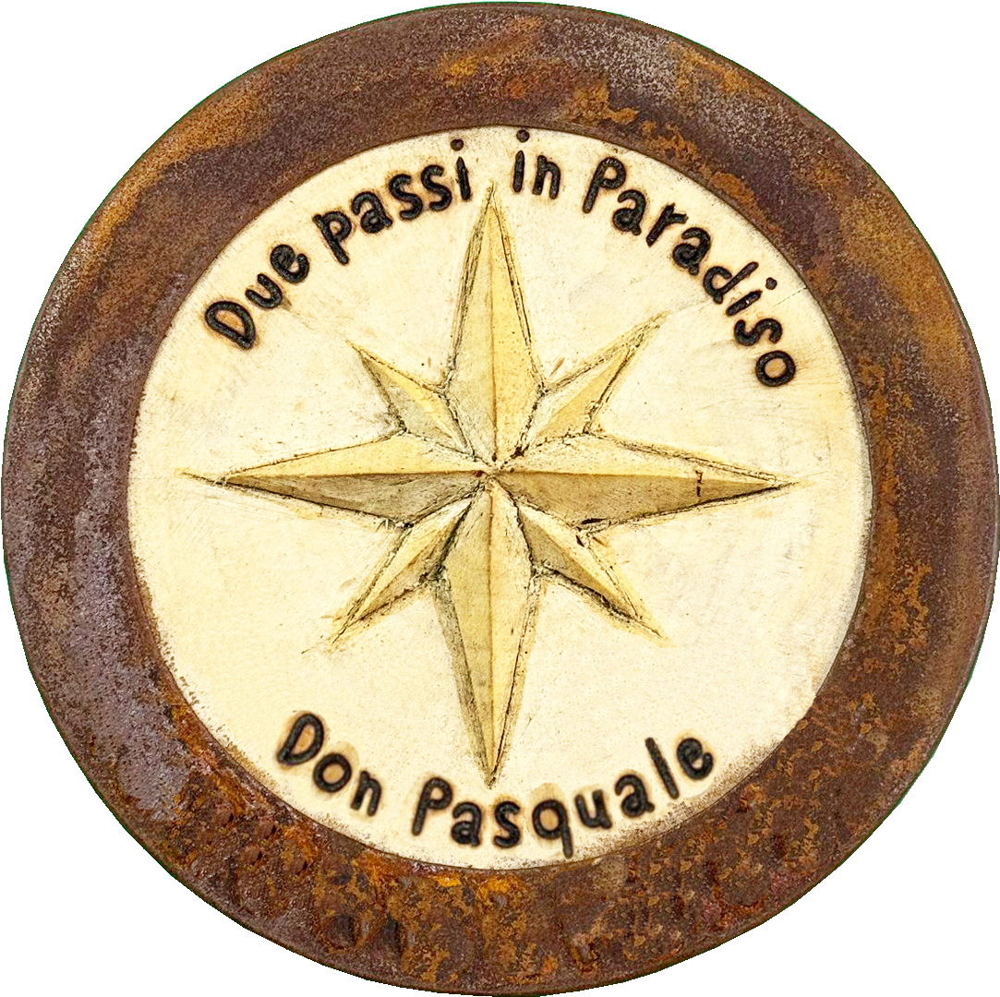

Percorso ad anello in Trentino, 13,5 km, dislivello 500 metri, tempo 3 ore e 30 minuti.

Percorso dedicato alla memoria di Don Pasquale Beretta che tanto amò e ci insegnò ad amare questi meravigliosi luoghi: il suo Paradiso!